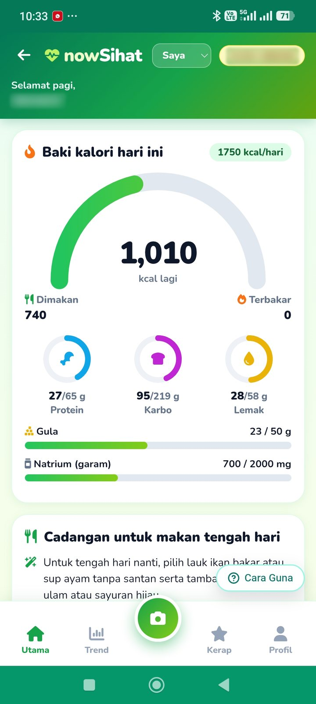

Tahu apa yang masuk
Hentikan teka-teka. Dapat gambaran jelas kalori, gula dan garam tanpa timbang atau taip.
Pembantu Pemakanan Keluarga
Ambil gambar hidangan, dapat anggaran kalori, protein, gula dan garam, serta nasihat ringkas ikut umur dan matlamat anda. Tak perlu timbang atau taip satu-satu.
Percubaan percuma 15 hari. Tiada kad kredit diperlukan. Baharu: meTime 🌸

Realiti Pemakanan
Makanan Malaysia sedap, tapi sukar dianggar. Tanpa rekod, kita tak sedar dari mana gula, garam dan lebihan kalori datang.
Ujian 5 soalan
Jawab dengan jujur. Jawapan anda tidak disimpan.
Saya boleh agak berapa kalori hidangan utama saya hari ini.
Saya tahu kandungan gula dalam minuman yang saya ambil setiap hari.
Saya ada rekod apa yang saya makan sepanjang minggu ini.
Saya biasa melaraskan hidangan seterusnya selepas makan banyak.
Saya dan pasangan saling bantu menjaga pemakanan di rumah.
Apa yang nowSihat ada, app lain tiada
Selepas setiap snap, dapat dua ayat nasihat dalam Bahasa Melayu yang mesra, ikut umur dan matlamat anda, serta cadangan apa nak makan seterusnya.
Anda dan pasangan guna satu langganan, dengan profil, sasaran dan rekod masing-masing. App lain caj setiap orang.
Tandakan hari berpuasa dan nasihat terus disesuaikan untuk sahur dan berbuka. App luar negara tak kenal Isnin Khamis.
Kongsi rekod dengan coach diet pilihan anda, yang boleh beri komen dan sasaran. Hanya jika anda setuju, dan boleh dihentikan bila-bila masa.
Tarikh lahir, jantina dan pasangan diambil terus dari pokok keluarga myNasab. Tak perlu isi borang panjang.
Jejak haid dan nifas dengan panduan mazhab Syafie, kiraan qadha puasa, dan panduan suami memahami isteri. Lihat meTime →
Nasi lemak, roti canai, teh tarik. Anggaran ikut saiz hidangan kita, bukan saiz pinggan orang barat.
Yang asas pun ada, dan lebih mudah.Ciri yang biasa ada pada app lain, tapi tanpa timbang dan tanpa taip.
Ambil gambar makanan atau minuman dan dapat anggaran kalori, protein, gula dan garam. Tak perlu cari dalam senarai makanan.
Lihat berapa yang sudah dimakan berbanding sasaran hari ini, dan apa yang perlu dikurangkan atau ditambah.
Baharu: meTime 🌸
Untuk wanita, dan suami yang mahu memahamiApp kitaran lain hanya meramal tarikh. meTime turut kira hukum haid dan nifas, qadha puasa Ramadan, dan bantu suami memahami emosi isteri pada setiap fasa.
| Ciri | App biasa | meTime |
|---|---|---|
| Ramalan haid & tempoh subur | ✓ | ✓ |
| Hukum haid, nifas & istihadah | ✗ | ✓ |
| Kiraan qadha puasa Ramadan | ✗ | ✓ |
| Panduan untuk suami | ✗ | ✓ |
| Satu langganan untuk suami isteri | ✗ | ✓ |
| Dalam Kalendar keluarga (Famili Pintar) | ✗ | ✓ |
Termasuk dalam langganan nowSihat. Data peribadi, hanya dikongsi dengan suami jika anda tick "Benarkan suami lihat".
Cara ia berfungsi
Satu akaun Famili Pintar untuk semua aplikasi. Anda terus dibawa ke nowSihat.
Umur, jantina dan matlamat supaya nasihat sesuai dengan anda.
Ambil gambar sebelum makan. Boleh tambah nota ringkas kalau perlu.
Terus nampak nutrisi hidangan dan cadangan untuk makan seterusnya.
Kenapa anda memerlukannya
Hentikan teka-teka. Dapat gambaran jelas kalori, gula dan garam tanpa timbang atau taip.
Setiap orang ada rekod dan sasaran sendiri dalam satu langganan. Dengan meTime, suami juga lebih faham keadaan isteri setiap bulan.
Untuk pengguna bawah 18 tahun, nasihat difokuskan pada pinggan seimbang dan tumbesaran, bukan diet.
Cuba percuma 15 hari, kemudian 20 kredit sebulan.1 kredit bersamaan RM1. Pendaftaran baru menerima 20 kredit percuma. Setiap orang dapat 6 imbasan sehari. Perlu lebih? 1 kredit untuk 3 imbasan tambahan.
Daftar percuma, snap hidangan pertama anda, dan lihat bezanya.
Perlukan alat urus waris, kewangan dan penjagaan keluarga yang terhubung?
Lawati Famili Pintar →